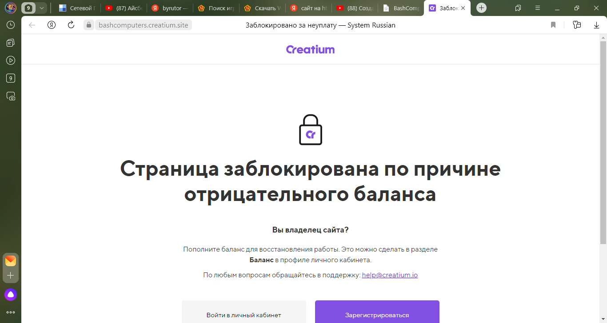
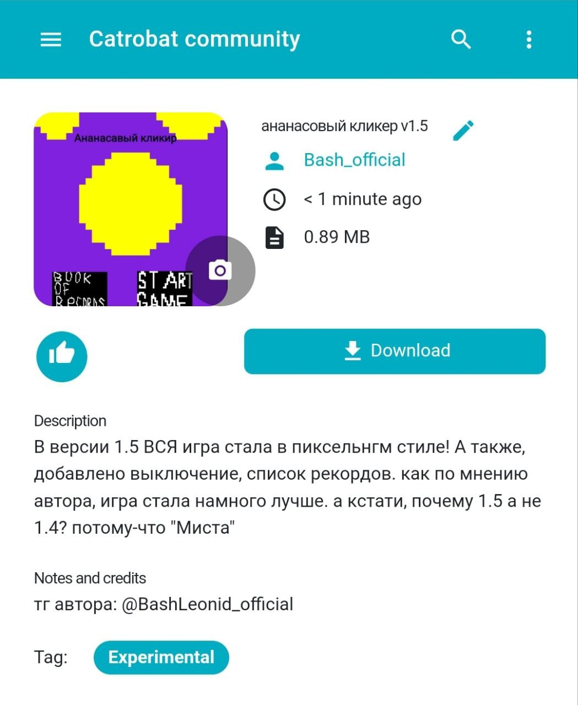

BashComputers News

19.03.2023
Сегодня, произошло страшное событие... Наш сайт https://bashcomputers.creatium.site/ был заблокан... но, я уже делаю этот сайт!
Все подробности в нашем тг канале!

Какое-то время, на сайте не будет фоток. Ну, не будет в том смысле, что
фото будут но на них ничего не будет. До какого момента так будет? Непонятно...
АХХХАХАХАХ, проблему за минуту решил)))
Я обновил BlopUI до версии 1.2! В фото ниже написано что добавлено нового.

20.03.23
Сегодня произошло одно из важных событий!!! Я выложил ГЛОБАЛЬНОЕ обновление для ананасового кликера!

Я сейчас сижу за ноутом и пишу сайт, а какой, я написал в телеге!
Ну, я сделал BashUI, но, пока, он сырой, об этом говорит версия beta 0.8
Я обновил BashUI до версии 1.0, а это значит что я выпустил релиз!
Установить .apk